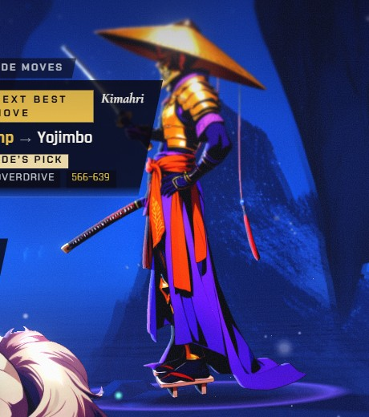
Yojimbo cast in battle (panel held open)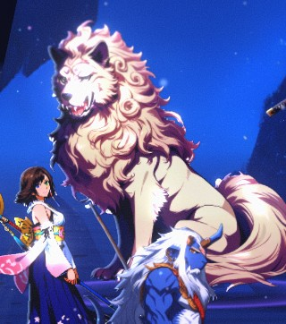
Daigoro 30° bite in battle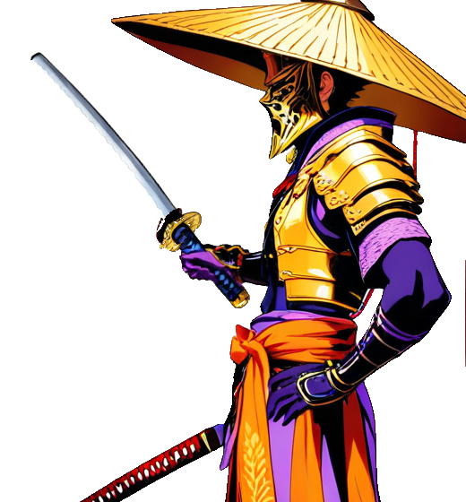
Yojimbo cast 6.5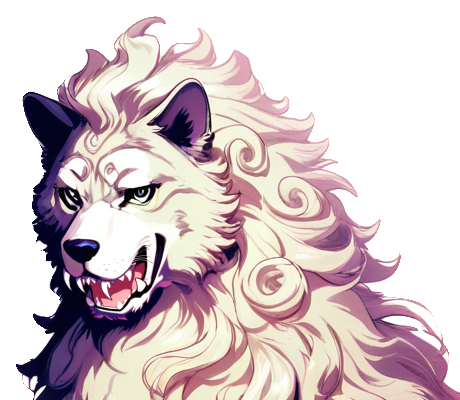
Daigoro 30° 7.0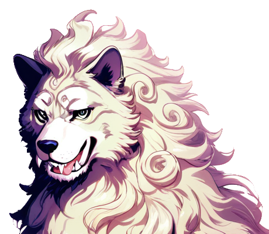
20° alt 6.5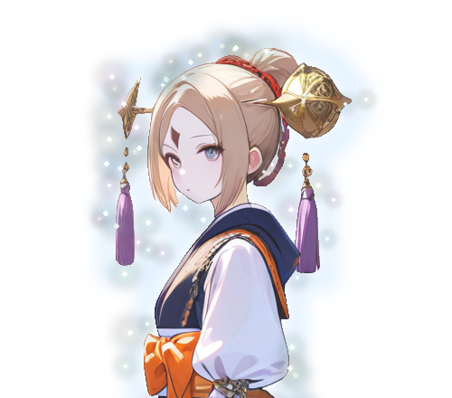
Ginnem idle 7.5Yojimbo draws his blade for every action. The Daigoro order, Kozuka, Wakizashi and Zanmato are all abilities, so all use cast. Every hit is the idle under the engine's flinch. Daigoro opens his jaws for each bite. Ginnem keeps her idle: in 80 engine battles she never acted and was never hit.
Cost: Daigoro's 30° bite is ready; a small touch-up is advised. Yojimbo's blade needs one pixel repair first: the blade root, inked edges, a pointed tip and the glove edge. Lengthening the blade needs your yes.
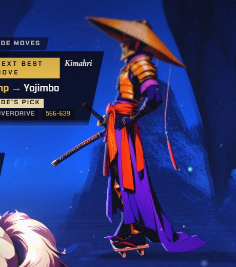
Yojimbo hurt (lean-back) in battle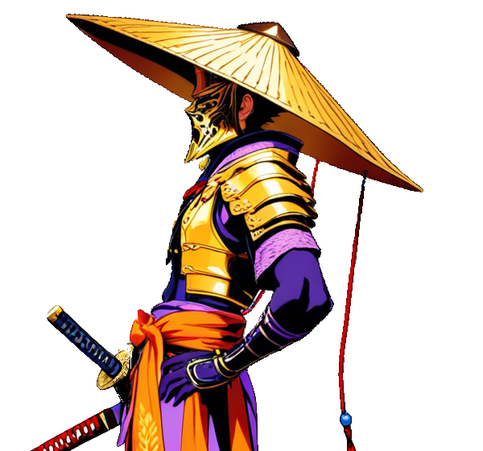
Yojimbo hurt 6B adds one painting, Yojimbo's hurt. The warp is clean, but leaning back makes him look chin-up and aloof, not struck. At game size it looks almost the same as the engine's own flinch of the idle. There is no attack painting, because none of his moves is a plain physical attack.
Cost: A's cost, plus a hurt painting that scores 6 and barely beats the engine's flinch. Both the builder and the judge advise against it.
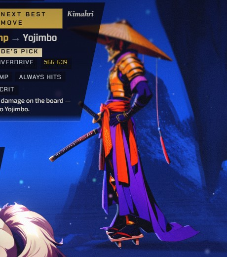
Yojimbo idle, flinch (ships today)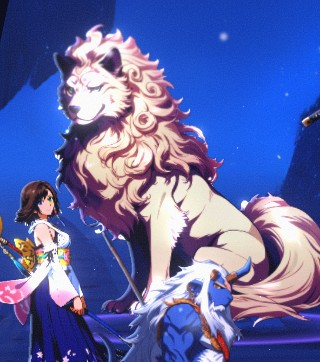
Daigoro idle as he bites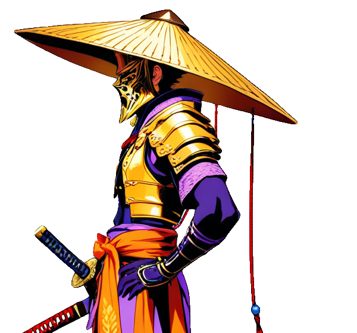
Yojimbo idle 7.9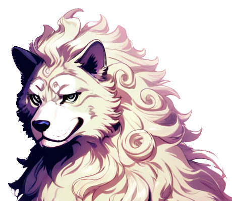
Daigoro idle 7.3No painting beyond the three idles. Every action is the idle lunging under the engine's flash, and nobody ever goes off-model. But during Zanmato, the move the fight is about, his sword stays sheathed, and the dog bites with his mouth closed.
Cost: none, since the idles are installed candidates at the bar. It is the hardest of the three to read, at the moment the player most needs to read the fight.